Table of Contents
Laborator 9 - Arbori Minimi de Acoperire
Obiective laborator
- Însuşirea conceptului de arbore minim de acoperire;
- Înţelegerea modului de funcţionare a algoritmilor de determinare a unui arbore minim de acoperire prezentaţi;
- Aplicarea algoritmilor în rezolvarea problemelor;
Importanţă – aplicaţii practice
Găsirea unui arbore minim de acoperire pentru un graf are aplicaţii în domenii cât se poate de variate:
- Reţele (de calculatoare, telefonie, cablu TV, electricitate, drumuri): se doreşte interconectarea mai multor puncte, cu un cost redus şi atunci este utilă cunoaşterea arborelui care conectează toate punctele, cu cel mai mic cost posibil. STP(Spanning Tree Protocol) este un protocol de rutare care previne apariţia buclelor într-un LAN, şi se bazează pe crearea unui arbore de acoperire. Singurele legături active sunt cele care apar în acest arbore, iar astfel se evită buclele.
- Segmentarea imaginilor: împărţirea unei imagini în regiuni de pixeli cu proprietăţi asemănătoare. E utilă mai apoi în analiza medicală a unei zone afectate de o tumoare de exemplu.
- Algoritmi de aproximare pt probleme NP-dure: problema comis-voiajorului, arbori Steiner.
- Clustering: pentru detectarea de clustere cu forme neregulate [8], [9].
Descrierea problemei şi a rezolvărilor
Dându-se un graf conex neorientat G =(V, E), se numeşte arbore de acoperire al lui G un subgraf G’=(V, E’) care conţine toate vârfurile grafului G şi o submulţime minimă de muchii E’⊆ E cu proprietatea că uneşte toate vârfurile şi nu conţine cicluri. Cum G’ este conex şi aciclic, el este arbore. Pentru un graf oarecare, există mai mulţi arbori de acoperire.
Dacă asociem o matrice de costuri, w, pentru muchiile din G, fiecare arbore de acoperire va avea asociat un cost egal cu suma costurilor muchiilor conţinute. Un arbore care are costul asociat mai mic sau egal cu costul oricărui alt arbore de acoperire se numeşte arbore minim de acoperire (minimum spanning tree) al grafului G. Un graf poate avea mai mulţi arbori minimi de acoperire. Dacă toate costurile muchiilor sunt diferite, există un singur AMA. Primul algoritm pentru determinarea unui arbore minim de acoperire a fost scris în 1926 de Otakar Boruvka. În prezent, cei mai folosiţi algoritmi sunt Prim şi Kruskal. Toţi trei sunt algoritmi greedy, şi rulează în timp polinomial. La fiecare pas, pentru a construi arborele se alege cea mai bună variantă posibilă la momentul respectiv. Generic, algoritmul de determinare a unui AMA se poate scrie astfel:
ArboreMinimDeAcoperire(G(V, E), c) MuchiiAMA = ∅; while (MuchiiAMA nu reprezintă muchiile unui arbore minim de acoperire) găseşte o muchie (u, v) care este sigură pentru MuchiiAMA; MuchiiAMA = MuchiiAMA ∪ {(u, v)}; return MuchiiAMA;
O muchie sigură este o muchie care se poate adăuga unei submulţimi de muchii ale unui arbore minim de acoperire, astfel încât noua mulţime obţinută să aparţină tot unui arbore minim de acoperire. Iniţial, MuchiiAMA este o mulţime vidă. La fiecare pas, se adaugă câte o muchie sigură, deci MuchiiAMA rămâne o submulţime a unui AMA. În consecinţă, la sfarşitul rulării algoritmului (când muchiile din mulţime unesc toate nodurile din graf), MuchiiAMA va conţine de fapt arborele minim de acoperire dorit.
Algoritmul Kruskal
Algoritmul a fost dezvoltat în 1956 de Joseph Kruskal. Determinarea arborelui minim de acoperire se face prin reuniuni de subarbori minimi de acoperire. Iniţial, se consideră că fiecare nod din graf este un arbore. Apoi, la fiecare pas se selectează muchia de cost minim care uneşte doi subarbori disjuncţi, şi se realizează unirea celor doi subarbori. Muchia respectivă se adaugă la mulţimea MuchiiAMA, care la sfârşit va conţine chiar muchiile din arborele minim de acoperire.
Pseudocod
Kruskal(G(V, E), w) MuchiiAMA <- ∅; for each v in V do MakeSet(v); //fiecare nod e un arbore diferit sort(E); //sortează muchiile în ordine crescătoare a costului for each (u,v) in E do if (FindSet(u) != FindSet(v)) then //capetele muchiei fac parte //din subarbori disjuncţi MuchiiAMA = MuchiiAMA ∪ {(u, v)}; //adaugă muchia la arbore Union(u, v); //uneşte subarborii corespunzători lui u şi v return MuchiiAMA;
Bucla principală for poate fi înlocuită cu o buclă while, în care se verifică dacă în MuchiiAMA există mai puţin de |V| - 1 muchii, pentru că orice arbore de acoperire are |V| - 1 muchii, iar la fiecare pas se adaugă o muchie sigură.
Exemplu de rulare
Se consideră graful din figura următoare:
Fiecare subarbore va fi colorat diferit. Cum iniţial fiecare nod reprezintă un subarbore, nodurile au culori diferite. Pe măsură ce subarborii sunt uniţi, nodurile aparţinând aceluiaşi subarbore vor fi coloraţi identic. Costurile muchiilor sunt sortate în ordine crescătoare.

Pas 1
Se alege prima muchie, (1,4). Se observă că uneşte subarborii {1} şi {4}, deci muchia e adăugată la MuchiiAMA, iar cei doi subarbori se unesc. 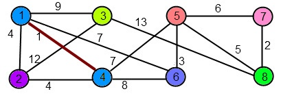 MuchiiAMA = {(1,4)}.
{kind=link}
Pas 2
Următoarea muchie este (7,8), care uneşte {7} şi {8}. Se adaugă la MuchiiAMA şi se unesc cei doi subarbori. 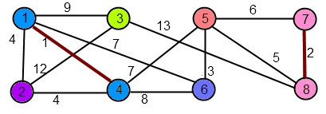 MuchiiAMA = {(1,4),(7,8)}.
{kind=link}
Pas 3
Următoarea muchie este (5,6), care uneşte {5} şi {6}. Se adaugă la MuchiiAMA şi se unesc cei doi subarbori. 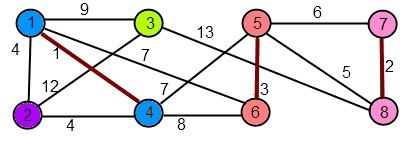 MuchiiAMA = {(1,4),(7,8),(5,6)}.
{kind=link}
Pas 4
Următorul cost este 4. Se observă că muchiile (1,2) şi (2,4) au costul 4 şi unesc {2} cu {1,4}. Se adaugă la MuchiiAMA una dintre cele două muchii, fie ea (1,2), şi se unesc cei doi subarbori. Alegerea muchiei (2,4) va duce la găsirea unui alt AMA. [Am spus anterior că un graf poate avea mai mulţi arbori minimi de acoperire, cu acelaşi cost, dacă există muchii diferite cu acelaşi cost.] 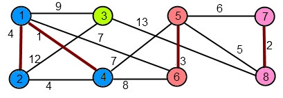 MuchiiAMA = {(1,4),(7,8),(5,6),(1,2)}.
{kind=link}
Pas 5
Următoarea muchie de cost minim este (5,8), care uneşte {5,6} şi {7,8}. Se adaugă la MuchiiAMA şi se unesc cei doi subarbori, rezultând {5,6,7,8}. 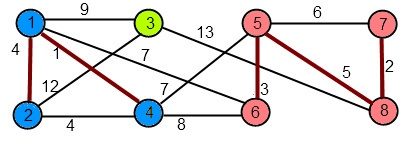 MuchiiAMA = {(1,4),(7,8),(5,6),(1,2), (5,8)}.
{kind=link}
Pas 6
Muchia (5,7), care are cel mai mic cost actual, are ambele extremităţi în subarborele {5,6,7,8}. În consecinţă, nu se efectuează nicio schimbare.
MuchiiAMA = {(1,4),(7,8),(5,6),(1,2),(5,8)}.
Pas 7
Următorul cost este 7. Se observă că muchiile (1,6) şi (4,5) au costul 7 şi unesc subarborii {1,2,4} şi {5,6,7,8}. Se adaugă la MuchiiAMA (1,6), şi se unesc cei doi subarbori. Alegerea muchiei (4,5) va duce la găsirea unui alt AMA. 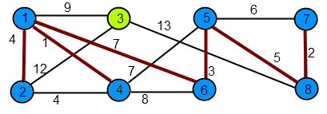 MuchiiAMA = {(1,4),(7,8),(5,6),(1,2),(5,8),(1,6)}.
{kind=link}
Pas 8
Muchia (4,6) de cost 8 are capetele în acelaşi subarbore, deci nu se produc schimări.
MuchiiAMA = {(1,4),(7,8),(5,6),(1,2),(5,8),(1,6)}.
Pas 9
Muchia (1,3) de cost 9 uneşte cei doi subarbori rămaşi, {1,2,4,5,6,7,8} şi {3}. Deci după unire obţinem un singur arbore. (1,3) se adaugă la MuchiiAMA, care va conţine acum 7 muchii, iar algoritmul se opreşte. 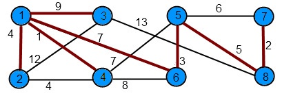 Arborele minim de acoperire obţinut este {(1,4),(7,8),(5,6),(1,2),(5,8),(1,6), (1,3)}.Costul său se calculează însumând costurile tuturor muchiilor:
{kind=link}
Cost(MuchiiAMA) = 1 + 2 + 3 + 4 + 5 + 7 + 9 = 31
Alţi arbori minimi de acoperire pentru exemplul propus sunt: * {(1,4),(7,8),(5,6),(1,2),(5,8),(4,5), (1,3)} * {(1,4),(7,8),(5,6),(2,4),(5,8),(1,6), (1,3)} * {(1,4),(7,8),(5,6),(2,4),(5,8),(4,5), (1,3)}.
Pentru alte exemple explicate consultaţi [2], [3] şi [5].
Complexitate
Timpul de execuţie depinde de implementarea structurilor de date pentru mulţimi disjuncte. Vom presupune că se foloseşte o pădure cu mulţimi disjuncte[cor]. Iniţializarea se face într-un timp O(|V|). Sortarea muchiilor în funcţie de cost se face în O(|E|log|E|). În bucla principală se execută |E| operaţii care presupun două operaţii de găsire a subarborilor din care fac parte extremităţile muchiilor şi eventual o reuniune a acestor arbori, într-un timp O(|E|log|E|).
Deci complexitatea totală este: O(|V|) + O(|E|log|E|) + O(|E|log|E|) = O(|E|log|E|).
Cum |E|⇐ |V|2, şi log(|V|2) = 2log(|V|) = log(|V|), rezultă o complexitate O(|E|log|V|).
Algoritmul Prim
Algoritmul a fost prima oară dezvoltat în 1930 de matematicianul ceh Vojtěch Jarnik, şi independent în 1957 de informaticianul Robert Prim, al cărui nume l-a luat. Algoritmul consideră iniţial că fiecare nod este un subarbore independent, ca şi Kruskal. Însă spre deosebire de acesta, nu se construiesc mai mulţi subarbori care se unesc şi în final ajung să formeze AMA, ci există un arbore principal, iar la fiecare pas se adaugă acestuia muchia cu cel mai mic cost care uneşte un nod din arbore cu un nod din afara sa. Nodul rădăcină al arborelui principal se alege arbitrar. Când s-au adăugat muchii care ajung în toate nodurile grafului, s-a obţinut AMA dorit. Abordarea seamănă cu algoritmul Dijkstra de găsire a drumului minim între două noduri ale unui graf.
Pentru o implementare eficientă, următoarea muchie de adăugat la arbore trebuie să fie uşor de selectat. Vârfurile care nu sunt în arbore trebuie sortate în funcţie de distanţa până la acesta (de fapt costul minim al unei muchii care leagă nodul dat de un nod din interiorul arborelui). Se poate folosi pentru aceasta o structură de heap. Presupunând că (u, v) este muchia de cost minim care uneşte nodul u cu un nod v din arbore, se vor reţine două informaţii:
- d[u] = w[u,v] distanţa de la u la arbore
- p[u] = v predecesorul lui u în drumul minim de la arbore la u.
La fiecare pas se va selecta nodul u cel mai apropiat de arborele principal, reunind apoi arborele principal cu subarborele corespunzător nodului selectat. Se verifică apoi dacă există noduri mai apropiate de u decât de nodurile care erau anterior în arbore, caz în care trebuie modificate distanţele dar şi predecesorul. Modificarea unei distanţe impune şi refacerea structurii de heap.
Pseudocod
Prim(G(V,E), w, root) 1. MuchiiAMA <- ∅; 2. for each u in V do 3. d[u] = INF; //iniţial distanţele sunt infinit 4. p[u] = NIL; //şi nu există predecesori 5. d[root] = 0; //distanţa de la rădăcină la arbore e 0 6. H = Heap(V,d); //se construieşte heap-ul 7. while (H not empty) do //cât timp mai sunt noduri neadăugate 8. u = GetMin(H); //se selectează cel mai apropiat nod u 9. MuchiiAMA = MuchiiAMA ∪ {(u, p[u])};//se adaugă muchia care uneşte u cu un nod din arborele principal 10. for each v in Adj(u) do //pentru toate nodurile adiacente lui u se verifică dacă //trebuie făcute modificări 11. if w[u][v] < d[v] then 12. d[v] = w[u][v]; 13. p[v] = u; 14. Heapify(v, H); //refacerea structurii de heap 15. MuchiiAMA = MuchiiAMA \ {(root, p[root])}; 16. return MuchiiAMA;
Exemplu de rulare
Se consideră graful folosit pentru exemplificarea algoritmului Kruskal.
Iniţial fiecare nod reprezintă un arbore independent, şi are o culoare unică. Se alege ca rădăcină a arborelui principal nodul 1.
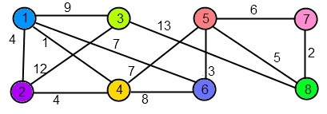 Pas 1
{kind=link}
Se alege muchia de cost minim care uneşte rădăcina cu un alt nod: (1,4) de cost 1 si se adaugă arborelui principal.
 MuchiiAMA = {(1,4)}.
MuchiiAMA = {(1,4)}.
Pas 2
Se alege muchia de cost minim care uneşte 1 sau 4 cu un alt nod. (1,2) şi (2,4) au ambele costul 4. Se alege una dintre ele, fie ea (1,2). 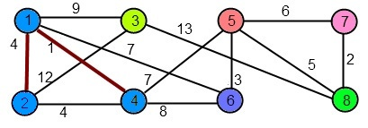 MuchiiAMA = {(1,4),(1,2)}.
{kind=link}
Pas 3
Se alege următoarea muchie care uneşte {1,4,2} cu alt nod. (1,6) şi (4,5) au acelaşi cost, dar adaugă arborelui noduri diferite. La acest pas se selectează de exemplu (1,6). Selectând la acest pas (4,5) s-ar obţine un alt arbore de acoperire. 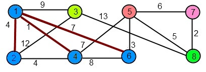 MuchiiAMA = {(1,4),(1,2),(1,6)}.
{kind=link}
Pas 4
Se caută muchia de cost minim care uneşte {1,4,2,6} cu un alt nod, şi se găseşte (6,5) de cost 3. Nodul 5 va fi adăugat arborelui principal. 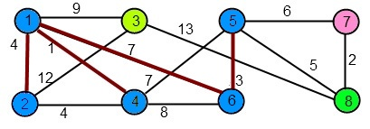 MuchiiAMA = {(1,4),(1,2),(1,6),(6,5)}.
{kind=link}
Pas 5
Se alege muchia de cost minim care uneşte {1,4,2,6,5} cu un alt nod. (5,8) de cost 5 se adaugă listei de muchii. 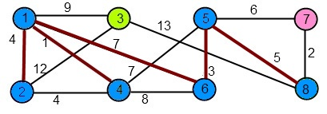 MuchiiAMA = {(1,4),(1,2),(1,6),(5,6),(5,8)}
{kind=link}
Pas 6
Se alege muchia de cost minim (8,7) care uneşte {1,4,2,6,5,8} cu nodul 7. MuchiiAMA = {(1,4),(1,2),(1,6),(5,6),(5,8),(8,7)}.
{kind=link}
Pas 7 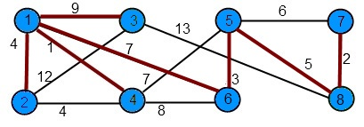 Se alege muchia (1,3) de cost 9, care uneşte arborele principal cu ultimul nod ramas, şi se adaugă mulţimii de muchii. Cum toate nodurile sunt acoperite, am obţinut un arbore minim de acoperire.
{kind=link}
MuchiiAMA = {(1,4),(1,2),(1,6),(5,6),(5,8),(8,7),(1,3)}.
Cost(MuchiiAMA) = 1 + 4 + 7 + 3 + 5 + 2 + 9 = 31
Alţi arbori minimi de acoperire pentru exemplul propus se pot obţine alegând diferit muchiile cu acelaşi cost (vezi paşii 2 şi 3) .
Pentru alte exemple explicate consultaţi [2], [4] şi [6].
Complexitate
Iniţializările se fac în O(|V|). Bucla principală while se execută de |V| ori. Procedura GetMin() are nevoie de un timp de ordinul O(lg|V|), deci toate apelurile vor dura O(|V|lg|V|). Bucla for este executată în total de O(|E|) ori, deoarece suma tuturor listelor de adiacenţă este 2|E|. Modificarea distanţei, a predecesorului, şi refacerea heapului se execută într-un timp de O(1), O(1) şi respectiv O(lg|V|). Deci în total bucla interioară for durează O(|E|lg|V|).
În consecinţă, timpul total de rulare este O(|V|lg|V|+|E|lg|V|), adică O(|E|lg|V|). Aceeaşi complexitate s-a obţinut şi pentru algoritmul Kruskal. Totuşi, timpul de execuţie al algoritmului Prin se poate îmbunătăţi până la O(|E|+|V|lg|V|), folosind heap-uri Fibonacci.
Concluzii
Un arbore minim de acoperire al unui graf este un arbore care conţine toate nodurile, şi în plus acestea sunt conectate prin muchii care asigură un cost total minim. Determinarea unui arbore minim de acoperire pentru un graf este o problemă cu aplicaţii în foarte multe domenii: reţele, clustering, prelucrare de imagini. Cei mai cunoscuţi algoritmi, Prim şi Kruskal, rezolvă problema în timp polinomial. Performanţa algoritmilor depinde de modul de reprezentare a structurilor de date folosite.
Referinţe
[1] – http://en.wikipedia.org/wiki/Minimum_spanning_tree
[2] – T. Cormen, C. Leiserson, R. Rivest, C. Stein – Introducere în Algoritmi, cap. 24
[3] – http://en.wikipedia.org/wiki/Kruskal%27s_algorithm
[4] – http://en.wikipedia.org/wiki/Prim%27s_algorithm
[5] – http://w3.cs.upt.ro/~calin/resources/sdaa/kruskal.ppt
[6] – http://www.cs.upt.ro/~calin/resources/sdaa/prim.ppt
[7] – http://www.cs.princeton.edu/~wayne/kleinberg-tardos/04mst.pdf
[8] – http://hc.ims.u-tokyo.ac.jp/JSBi/journal/GIW01/GIW01F03.pdf
[9] – http://www4.ncsu.edu/~zjorgen/ictai06.pdf
[10] – C. Giumale – Introducere în Analiza Algoritmilor, cap.5.5
Probleme
1. Cablare optimă în rețele de date (10p)
Prietenul nostru Andrei a fost asignat drept noul șef al departamentul de rețelistică al companiei Nuke Cola. Sediul companiei are arondate N-1 sucursale, iar Andrei trebuie să asigure conectivitate între toate locațiile folosind o lungime minimă de fibră optică, lucru care duce implicit la reducerea costurilor totale. (AMA) [5P]
În cazul în care directorul general nu este de acord cu planul său, Andrei vrea să aibă un plan de backup, acesta reprezentând cea de-a doua cea mai bună soluție din punctul de vedere al lungimii totale de fibră optică utilizată. (AMA2) [5P]
Vă rugăm să îl ajutați pe Andrei să găsească configurația optimă având drept intrare distanțele între locațiile care pot fi conectate direct una cu cealaltă.
Implementati problema folosind, la alegere, algoritmii lui Prim sau Kruskal, motivând alegerea.
Ca alternativă la AMA2, puteţi implementa cealaltă variantă de AMA, faţă de cea folosită iniţial.
Posibil fisier de intrare (exemplul din laborator):
# explicatii format # n=numar varfuri m=numar muchii # m randuri, cate unul pentru fiecare muchie: start end cost 8 13 1 2 4 1 3 9 1 4 1 1 6 7 2 3 12 2 4 4 3 8 13 4 5 7 4 6 8 5 6 3 5 7 6 5 8 5 7 8 2